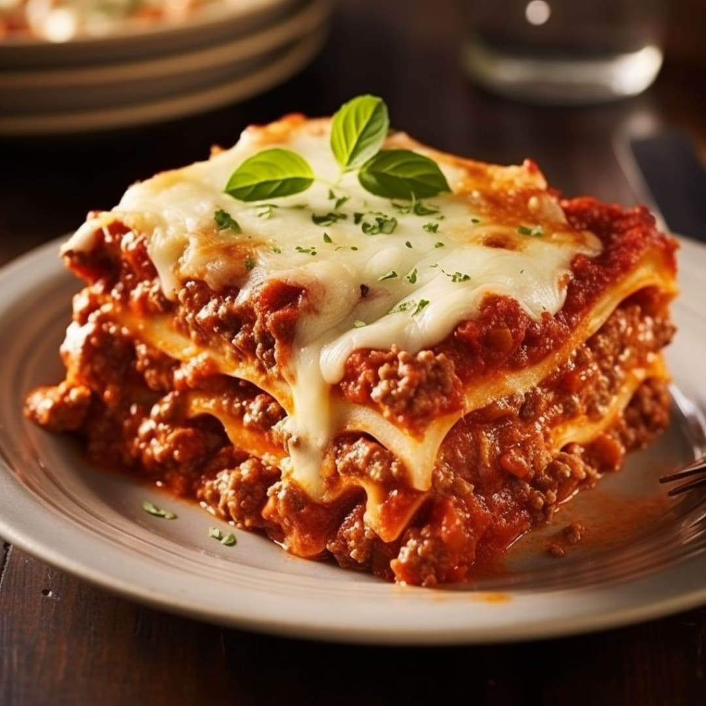

Lasagna Recipe

Ingredients:
- 12 lasagna noodles
- 1 pound ground beef
- 2 cups ricotta cheese
- 2 cups shredded mozzarella cheese
- 1 cup grated Parmesan cheese
- 2 cups marinara sauce
- 1 teaspoon dried oregano
- Salt and pepper to taste
Instructions:
- Preheat the oven to 375°F (190°C).
- Cook the lasagna noodles according to package instructions. Drain and set aside.
- In a large skillet, cook the ground beef over medium heat until browned. Drain excess fat.
- Add marinara sauce to the cooked beef and stir to combine. Simmer for 5 minutes.
- In a separate bowl, mix ricotta cheese, half of the mozzarella cheese, Parmesan cheese, oregano, salt, and pepper.
- In a baking dish, spread a thin layer of the meat sauce. Layer with noodles, ricotta mixture, and more meat sauce. Repeat layers until all ingredients are used, ending with meat sauce on top.
- Sprinkle the remaining mozzarella cheese on top.
- Cover with aluminum foil and bake for 25 minutes. Remove foil and bake for an additional 25 minutes or until the cheese is bubbly and golden brown.
- Let it cool for 10 minutes before serving. Enjoy!
Back to ProjectHome